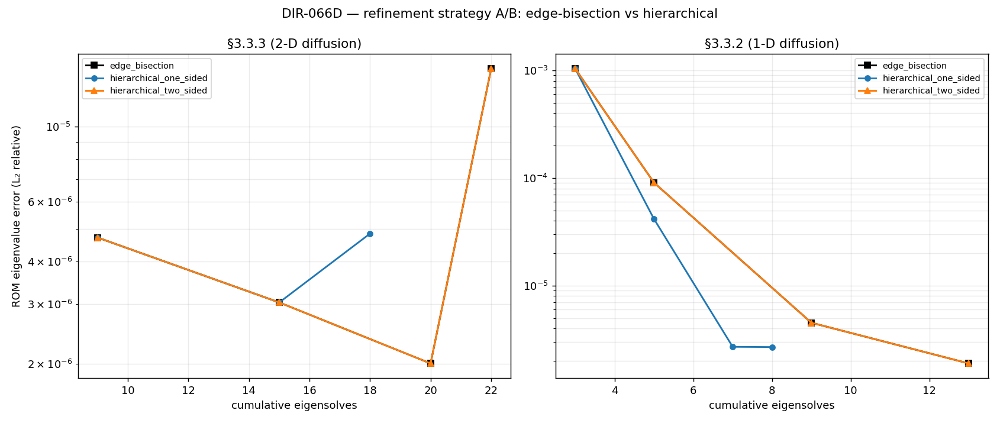

Refinement strategy A/B: edge-bisection vs hierarchical (measured)
What is on this page. A measured head-to-head of the two refinement strategies the refinement-strategy work added — edge-bisection (the parity-locked default) and the opt-in hierarchical parent→child strategy. Where
method-comparison-1d.mdis a forward-looking framework that fixes axes before running anything, this page reports numbers from a harness that ran. It turns the design conjecture the study was built to test —edge-bisection = cheap-but-can’t-reach; hierarchical = reaches-everything-but-pays-an-admissibility-tax. Measure, don’t guess.
— into three measured results: accuracy per eigensolve, the admissibility-tax, and the dead-zone coverage edge-bisection structurally misses.
Harness. The measurements were produced by an instrumented A/B harness in the project repository; the deterministic-solver and error-metric definitions are shared with the coverage-policy validation study, so the two A/B studies use one measurement definition. The committed measurements were taken at a smoke mesh resolution (12 elements per side); the findings below are structural (grid topology, reachability, forced-solve counts), so they reproduce at any mesh resolution.
1. What is being compared
Three refinement configurations, isolated to the strategy axis (the π⋆ coverage branch — the subject of the coverage-policy validation study — is switched off throughout, and the directional no-hanging-node admissibility invariant is asserted every level, so the admissibility claims are exercised, not assumed):
| Label | Strategy | Far half-interval | What it does |
|---|---|---|---|
| edge_bisection | edge-bisection | — | The default. Bisects the midpoint of a flagged edge — needs two pre-existing endpoints. |
| hierarchical_one_sided | hierarchical | abandoned (default) | Spawns the axis child from the flagged leaf’s dyadic index alone; certifies only the near (parent, child) edge, abandons the coarse far half. |
| hierarchical_two_sided | hierarchical | certified | As one-sided, but also certifies the far half-interval, solving an absent far bracket as a real point (the admissibility-solve). |
The cost currency is the reference method’s: cumulative eigensolves (every greedy node is one full eigensolve; ROM evaluation adds none). Accuracy is the relative eigenvalue error of the ROM (the Galerkin ROM evaluation) against the dense FE truth at a fixed interior query set, read at the end of every level.
2. Nested reproduction grids (§3.3.2 1-D, §3.3.3 2-D)
On the nested reproduction grids the strategies land close together, and the two-sided strategy is byte-identical to edge-bisection — the headline honest finding (mesh resolution 12, three refinement levels):
| Problem | Strategy | Nodes | Eigensolves | ROM L₂ | Admissibility-tax | Grid ≡ edge-bisection? |
|---|---|---|---|---|---|---|
| §3.3.3 (2-D) | edge_bisection | 22 | 22 | 1.48e-5 | 0 | — (baseline) |
| hierarchical_one_sided | 18 | 18 | 4.84e-6 | 0 | no (diverges) | |
| hierarchical_two_sided | 22 | 22 | 1.48e-5 | 0 | yes | |
| §3.3.2 (1-D) | edge_bisection | 13 | 13 | 1.89e-6 | 0 | — (baseline) |
| hierarchical_one_sided | 8 | 8 | 2.69e-6 | 0 | no (diverges) | |
| hierarchical_two_sided | 13 | 13 | 1.89e-6 | 0 | yes |
Reading the table:
- The admissibility-tax is 0 on the nested grids — for every strategy. This is exactly what the conjecture predicted: on a nested grid the two-sided far bracket is the coarser edge endpoint, which is already present, so the two-sided admissibility-solve never fires. The standard reproductions do not exercise the gap; the tax shows up only off the nested grid (§4).
- Two-sided ≡ edge-bisection. On a nested grid the hierarchical child coincides with the bisection midpoint and the two-sided test recovers the far half, so the grids are identical (same fingerprint). The opt-in strategy does not perturb the parity-locked default when the grid is admissible by construction.
- One-sided is cheaper. It abandons the coarse far halves, so it places strictly fewer nodes (2-D: 18 vs 22; 1-D: 8 vs 13). Here that came out more accurate in 2-D (it converged before the level cap) and marginally less accurate in 1-D — a directional, parent-side coverage certificate buys fewer eigensolves at the cost of saying nothing about the abandoned far halves. Which side of that trade wins is problem-dependent; the point is it is now measured, not asserted.
The cost-accuracy trajectories behind the table:

3. Why the nested grids hide the interesting difference
Edge-bisection refines the midpoint of an interval, so it needs two pre-existing endpoints. On a nested grid every refinement keeps both brackets present, so edge-bisection never stalls — and the hierarchical child lands on the same midpoint. The two strategies therefore agree (two-sided exactly, one-sided up to the abandoned far halves).
The difference this study was designed to expose only appears in an anisotropic pocket: a node refined along one axis but with no neighbour along another. There, edge-bisection has no edge to bisect — and that is precisely the wall the original MATLAB papered over with virtual points (a fabricated eigensolution). §4 builds that pocket deterministically.
4. The dead-zone: the anisotropic M1 pocket
The dead-zone probe builds the worked scenario from the hierarchical-strategy design: a 5-point cross around the centre with the top edge bisected vertically, yielding M1 at in-box fraction t = (0.5, 0.75) — a node with vertical neighbours but no horizontal neighbour, hence no axis-0 edge through it. (Built on the §3.3.3 box [0.8, 1.05]² so the §3.3.3 diffusion coefficient’s µ⁻² terms stay finite; the anisotropy is purely structural and box-independent.) Queries are placed horizontally displaced from M1 along the t₁ = 0.75 row — exactly the direction edge-bisection cannot reach.
| Strategy | Nodes added on the row | Forced solves (tax) | Dead-zone ROM L₂ | Reaches the direction? |
|---|---|---|---|---|
| baseline (before refinement) | — | — | 1.02e-3 | — |
| edge_bisection | 0 | 0 | 1.02e-3 (unchanged) | no |
| hierarchical_one_sided | 2 | 0 | 1.58e-6 | yes |
| hierarchical_two_sided | 4 | 2 | 4.88e-6 | yes |
Reading the table:
- Edge-bisection structurally misses the dead-zone. There is no axis-0 edge through
M1, so it can add zero nodes on that row and the ROM error there stays at the baseline. This is the “cheap-but-can’t-reach” half of the conjecture, made quantitative — and the reason the original code reached for virtual points. - Hierarchical reaches it from the index alone. The one-sided spawn adds the two horizontal children of
M1with no fabricated partner and no forced solves, and the dead-zone error collapses ~650× (1.02e-3 → 1.58e-6). - The admissibility-tax is real here — and only here. Two-sided also certifies the far half, which means solving the two absent far brackets as real points: 2 forced eigensolves (vs 0 on every nested grid in §2). That is the “pays-an-admissibility-tax” half of the conjecture, isolated to the anisotropic pocket where it actually bites. Both hierarchical modes reduce the dead-zone error by orders of magnitude; the tax is the price of the complete (two-sided) certificate over the directional (one-sided) one.
5. Bottom line
The guiding conjecture is confirmed and quantified:
- edge-bisection = cheap-but-can’t-reach — measured: it adds 0 nodes in the anisotropic direction and leaves a ~1e-3 ROM error untouched there.
- hierarchical = reaches-everything — measured: both modes reach the dead-zone from the dyadic index alone (no virtual points) and drop the error by 2-3 orders of magnitude.
- …but pays an admissibility-tax — measured: 0 on the nested reproduction grids (the far bracket is already present), non-zero only in the anisotropic pocket (two-sided: 2 forced solves to certify the far halves). One-sided pays nothing because it does not claim the far half.
The practical reading: keep edge-bisection as the default for nested-grid reproductions (two-sided is identical to it anyway, and one-sided risks dropping far-half coverage). Reach for the hierarchical strategy when the grid goes anisotropic and a direction would otherwise be unreachable — one-sided for the cheap directional certificate, two-sided when the far half must also be certified and the forced solves are affordable.
The harness also supports a bounded, peak-RSS-guarded spot-check of the §4.4 6-D elasticity problem, using the same trusted Galerkin ROM-evaluation metric; it is not part of the committed measurements because the 6-D greedy runs are wall-clock-bound (the parallel-execution study covers the measurements behind that statement), not because the mechanism differs.
6. §3.3.3 interior fill — the edge-centric strategies cannot reproduce the reference (DIR-096), the forward_points port does (DIR-097)
Section 3 warned that the nested reproduction grids “hide the interesting difference.” DIR-096 asked the sharper question the figure book actually needs answered: on §3.3.3, does any strategy reproduce the 2-D interior fill of the dissertation’s terminal grid? The dissertation 2DNLevel7 (64 nodes, from Table 2D Error’s terminal L=6) puts 30 of its nodes off every seed grid line — a genuine interior cloud. The rebuild’s default stays entirely on the boundary and the central cross.
The measurement (scripts/dir_096_reachability_3_3_3.py, mesh_n=64, all four strategies × FirstK-5/FirstK-20/Window) is a clean negative:
| Strategy | Interior nodes (best) | Note |
|---|---|---|
edge_bisection (default) |
0 | axis midpoint always lands on a seed line |
hierarchical (1- & 2-sided) |
0 | falls back to bisection on the isotropic seed † |
smolyak_orthogonal |
1 | only in admissible FirstK-5; unusable otherwise ‡ |
| reference target | 30 | dissertation 2DNLevel7, L=6, 64 nodes |
† This is the same reachability boundary Section 4 draws: the hierarchical strategy’s node-centric reach bites only in an anisotropic pocket. The §3.3.3 seed is isotropic — every flagged edge is a seed-lattice edge with same-level brackets, so _hierarchical_spawn_axis returns None and the strategy plain-bisects (two-sided byte-identical to edge-bisection, exactly as Section 2 found on the nested grids).
‡ smolyak_orthogonal places one interior node in its one admissible config. In FirstK-20/Window it violates the no-hanging-node admissibility invariant; with that guard disabled (a diagnostic probe, never a shipped config) it fills the interior only by runaway, non-terminating refinement (521 / 232 nodes, 445 / 177 interior at the level cap) — not the reference’s controlled 64-node grid.
Why. The dissertation’s fill comes from MATLAB forward_points (CodeSeptember/Main.m:329): omnidirectional node-centric spawning — every node spawns forward neighbours in every axis — combined with an a-posteriori certification that still terminates at 64 nodes. No edge-centric strategy replicates both: hierarchical spawns only along a flagged edge’s own axis, and smolyak_orthogonal fills only by losing termination/admissibility. See the figure-book §3.3.3 page’s Reachability & interior fill section (node overlay) and the empty-quarter analysis in DIR-050 (refinement-balance-and-reachability.md). Artifact: tests/artifacts/dir_096/reachability.json; pinned in tests/test_dir_096_reachability.py.
DIR-097 closes the gap: the forward_points port
DIR-097 ports the missing mechanism exactly: refinement_strategy="forward_points" (src/pevp/greedy/forward_points.py) is the MATLAB node-centric driver loop — every ACTIVE node spawns in-box forward neighbours on every axis at step width·2^-(n[k]+1) from a tracked per-node level vector n (MATLAB SG{level}.n, seeded at InitialLevel), each spawn is solved, added, and tested against its parent through the unchanged one-verdict path (_test_edge, incl. the Algorithm-6 t_c gate), and stays active for the next level iff any band flags REFINE (Main.m:905 Index == 0). Dedup skips an already-present coordinate entirely (check_forward_points.m). The resulting grids are intentionally not bracket-admissible — off-grid-line interior nodes have absent bracket-parents; that is the fill.
Rerunning the DIR-096 harness with the new strategy in the matrix (mesh_n=64) flips the verdict: forward_points is the only strategy that reproduces the interior fill —
| forward_points mode | Terminal | Interior nodes |
|---|---|---|
Window [0, 200] |
L=5, 88 nodes | 39 |
| FirstK-20 | L=8, 131 nodes | 68 |
| FirstK-5 | L=1, 21 nodes | 0 (certifies immediately) |
| reference target | L=6, 64 nodes | 30 |
The faithful-config sweep (scripts/dir_097_faithful_sweep.py, artifact tests/artifacts/dir_097/faithful_sweep.json; fixed Window [0, 200], t_pi=0.57, t_c=0.1, 3x3 seed; swept t_lambda × projection × InitialLevel) lands closest to the published grid at t_lambda=0.015 (the prose value), projection=off, InitialLevel=1: terminal L=5, 66 nodes, 21 interior vs the reference L=6, 64, 30 — packaged as RefinementConfig.dissertation_3_3_3_forward_points_preset(). Two honest residual notes (both Q11 territory — the publishing driver is missing from both MATLAB dumps, so exact Table 2D Error parity remains a stretch goal):
- The MATLAB source
t_lambda=0.085terminates far too early under the rebuild (L=2, 27 nodes in every swept combination) — the prose value is the one that reproduces the published behaviour, the opposite of what the source-vs-prose note ondissertation_3_3_3_window_presetguessed. - Projection repeats the §3.3.2 story: with the pre-matching projection on the run over-refines (L=5, 88 nodes, 39 interior); off is the closest overall. The per-level trajectory of the best config over-refines early (L1: 21 pts vs the table’s 13) and under-fills late (21 vs 30 interior), terminating one level early.
Pinned: mechanism + geometry + level-vector semantics live in tests/test_forward_points_refine.py (cheap, deterministic); the harness flip is pinned via the committed artifact in tests/test_dir_096_reachability.py.
7. admissible_spawn — the interior fill on a bracket-admissible grid (DIR-105)
forward_points (§6) reaches the interior but on a non-admissible grid: its per-lineage level vector n spawns off-grid-line interior nodes whose coarser bracket-parents are absent — “virtual points” (DIR-104, docs/matlab-virtual-points.md). That is why it must disable assert_admissible, π⋆, regions, and the parallel pool. DIR-105 ships the third pole that keeps both omnidirectionality and admissibility.
refinement_strategy="admissible_spawn" (greedy/admissible_spawn.py) is a node-centric driver loop like forward_points, with two changes that together remove the DIR-104 drift:
- Spawn geometry = canonical
axis_childfrom the node’s dyadic multi-index, in every axis, both sides — not the per-lineagen. This alone puts every spawn on the global dyadic lattice (removing then-vs-canonical-level decoupling DIR-104 identified as the seed of the drift). Consequence: from a seed corner it steps tot=1/2, notforward_points’t=1/4, so the interior cloud it produces is a different (still admissible) fill, reached one level deeper. - Pflüger back-fill before add. For each new child, its missing bracket-ancestors (
multi_index.admissible_ancestors— the downward-closure completion across all axes) are solved and added as inert support nodes before the child edge is added and tested. So the grid is downward-closed the instant the child lands;Graph.assert_admissible()holds and the strict all-axis DIR-104 orphan oracle is 0. The support-node solves are billed as the admissibility tax (RefinementResult.n_forced_admissibility_solves).
The verdict is the one path (_test_edge, incl. the t_c gate) on each (parent, child) edge; a child is ACTIVE next level iff any band flags REFINE. assert_admissible=True is the strategy’s contract (required, not merely allowed); π⋆ / regions / the parallel pool are rejected exactly like forward_points (deferred follow-ups — a back-fill can cross a region boundary).
Measured (scripts/dir_105_admissible_fill.py, §3.3.3 Window [0,200], t_pi=0.57, t_lambda=0.015, projection=off, 3×3 seed, mesh_n=64, tests/artifacts/dir_105/admissible_fill.json):
| strategy | terminal L | nodes | interior | orphans (all-axis) | admissible | tax |
|---|---|---|---|---|---|---|
edge_bisection |
5 | 48 | 0 | 5 | no (directional-only) | 0 |
forward_points |
5 | 66 | 21 | 14 | no | 0 |
admissible_spawn |
6 | 129 | 48 | 0 | yes | 50 |
The headline: admissible_spawn is the only strategy with interior fill AND 0 orphans. The tax (50) is 4.6 % of the full tensor grid (2^Lmax+1)² at the reached depth — sub-tensorial, confirming the DIR-104 prediction that the admissible completion stays genuinely sparse. The interior cloud differs from forward_points’ (canonical axis_child vs per-lineage n) — either is acceptable; the requirement was fill > 0 on an admissible grid, and that is met.
Pinned: mechanism + admissibility (0 orphans, assert_admissible teeth) + back-fill helper units in tests/test_dir_105_admissible_spawn.py (cheap, deterministic geometry pins + a mesh_n=32 physics run); the mesh_n=64 head-to-head numbers via the committed artifact.
Last updated: 2026-07-08 (DIR-105: admissible_spawn — the Pflüger-consistent third pole reaches the §3.3.3 interior fill on a bracket-admissible grid).